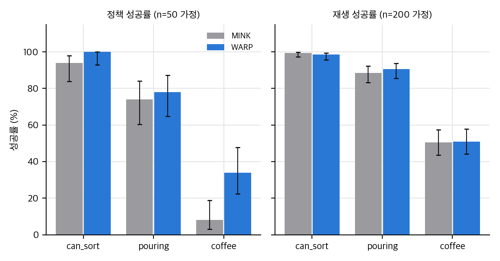
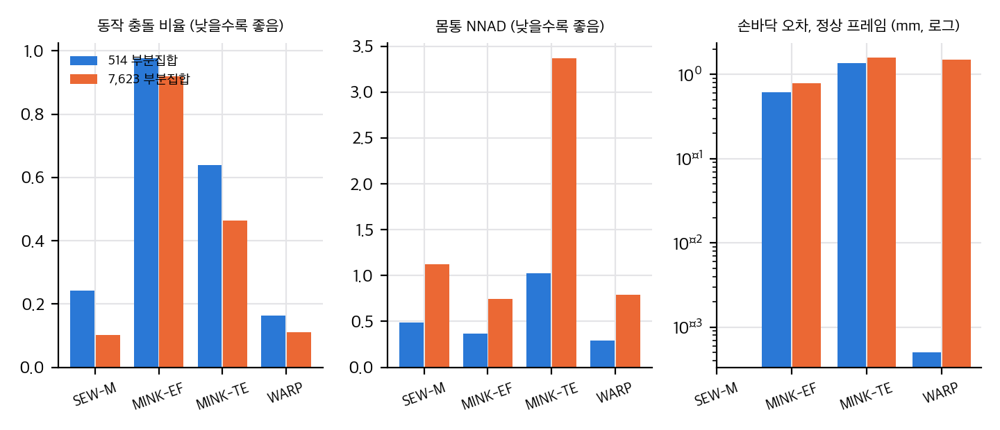
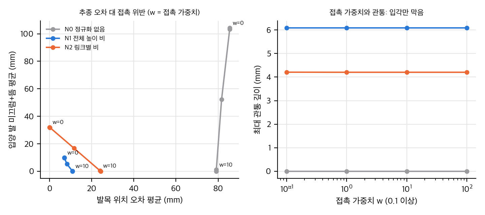
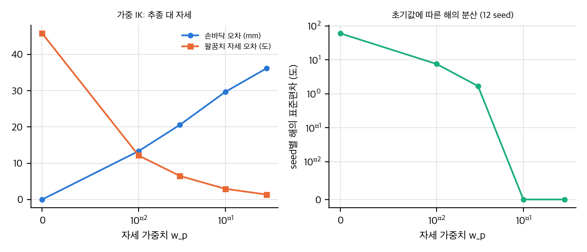

booktitle = Proceedings of the 10th Conference on Robot Learning (CoRL), 공개 저장소 README의 같은 표기). arXiv abs 페이지에는 댓글(Comments) 항목이 없어 채택을 arXiv로 확인하지는 못했습니다. IROS 2026 목록이 아니므로 conferences/iros2026/ 연결 대상이 아닙니다.paper/paper.pdf (23쪽, 15.5 MB, 본문 8쪽 + 참고문헌 + 부록 A–D). 텍스트는 paper/paper.txt.사람 자세를 로봇 어깨-팔꿈치-손목(SEW) 표현으로 옮긴 뒤 닫힌 형식의 해(c-SEW)로 손바닥 위치를 hard constraint로 맞추고, 몸통 위치 보정(adaptive offset)과 느린 기지 제어(lazy base)를 붙인 오프라인 리타게터입니다. 주장의 핵심은 "리타게팅 정밀도와 일관성이 좋아지면 같은 정책을 학습했을 때 성공률이 오른다"입니다. 그런데 헤드라인 수치(150배, 머신 정밀도)는 관절 한계와 lazy base를 모두 끈 변형에서 나오고, 하위 정책 비교(시뮬)는 사람이 아니라 GR1 로봇 시연을 옮긴 것이며, 실물 비교는 과제당 10회입니다. 이 셋을 구분해서 읽어야 합니다.
| 주장 | 본문 위치 | 근거 제시 방식 |
|---|---|---|
| 기존 리타게터는 부정확하거나 일관되지 않은 해를 낸다 (행동 다중모드) | §1, §3 | 개념 설명, 정량 근거는 §4.1 |
| c-SEW는 손목 정확 추종과 전신 구조를 함께 보존 | §3 식 (1)–(3), 부록 B.1–B.4 | 정리(Properties (i)–(iv)), 시뮬 지표 |
| 느린 기지 제어로 기지 움직임이 안정적 | §3 Lazy base, 부록 B.5 | 정성 (Fig. 4c), 정량 지표 없음 |
| 공개 시연 없이 사람 데이터만으로 전신 모바일 조작 정책의 제로샷 전이 | §1, §4.3 | 실물 4과제 × 10회 |
| 리타게팅 개선이 정책 성공률을 올린다 | §1 (35%), §4.2 Table 1 (+12%p) | 시뮬 3과제, 실물 3과제 |
03_analysis.md §4 유도).논문이 주장하는 성질: (i) 비퇴화 자세에서 유일해, (ii) 사람 손바닥과 정확히 일치, (iii) 자세 유사도를 최대화하는 배치(제약 하에), (iv) 마이크로초 단위 계산과 로봇별 보정 없음. (iv)는 측정값과 맞지 않습니다 (§5 참고, Table 3의 6.8 ms/프레임).
warp 프리셋)과 일치합니다(04_code_verification.md C14).04 C15, D5). "JL on"(WARP 전체)에서는 손바닥 평균 오차가 24.0 mm, 방향 오차 3.26°로 올라가며, MINK-EF on(0.75 mm, 0.011°)보다 나쁩니다. 논문은 이를 "목표가 작업공간 밖에 있어서"라고 설명하지만 검증하지 않았습니다.03_analysis.md §2).논문 D.1의 한계: (1) 기구학 중심이며 제어기 오차와 동역학을 무시, (2) 정책이 이미지를 쓰지 않고 AprilTag에 의존, (3) Quest 관성 추적의 지터가 그대로 감독 신호가 됨. 추가로 읽은 쪽에서 본 한계:
04 참고)v1 [cs.RO] 29 Jun 2026 → v2 [cs.RO] 19 Aug 2026, (b) 초록 말미 프로젝트 주소 warp-retarget.github.io → warp-retargeting.github.io (철자 수정).pdfimages -png 후 정렬 해시 비교). 그림, 표, 수식, 참고문헌은 바뀌지 않았습니다..scratch/v1.pdf에 임시 보관했고 저장소에는 넣지 않았습니다.재계산 스크립트: analysis/table_check.py → table_check_results.json. 장난감: analysis/retarget_toy.py → retarget_toy_results.json(약 8초). 그림: analysis/plot_figures.py. 모두 CPU 1스레드, numpy와 scipy만 사용합니다.

직접 계산: Table 1 정책(n=50 가정)과 재생(n=200 가정) 성공률과 Wilson 95% 구간.
평균 검산. 과제 세 개의 평균은 표 값과 일치합니다.
| 방법 | 재생 평균 (계산 / 표) | 정책 평균 (계산 / 표) |
|---|---|---|
| MINK | 79.50 / 79.5 | 58.67 / 59 |
| WARP | 80.00 / 80.0 | 70.67 / 71 |
차이. 정책 성공률 차이는 과제별로 can-sort +6, pouring +4, coffee +26%p이고 평균 +12%p입니다. 상대 비율로는 71/59 = +20%입니다. "12% higher"는 %p 차이입니다.
표본 크기는 논문에 없습니다. 값의 격자로 추정했습니다. 재생 값은 0.5%p 단위이므로 n = 200 demos입니다(99.5 = 199/200). 정책 값은 정수 단위이며 2%p 격자면 n = 50, 1%p면 n = 100입니다. 두 경우를 모두 계산했습니다.
과제별 Fisher 정확검정 (정책, n = 50 가정):
| 과제 | WARP | MINK | Fisher p | Holm 보정 |
|---|---|---|---|---|
| can-sort | 50/50 | 47/50 | ≈0.24 | 0.48 |
| pouring | 39/50 | 37/50 | ≈0.82 | 0.82 |
| coffee | 17/50 | 4/50 | ≈0.003 | 0.008 |
table_check_results.json).Fig. 7의 막대 라벨을 읽었습니다(±1%p, 그림에서 읽은 값이므로 근사치).
| 과제 | 재생 WARP / MINK | 롤아웃 WARP / MINK | 롤아웃 차이 (%p) |
|---|---|---|---|
| 상자 회전 | 100 / 95 | 65 / 40 | +25 |
| 카트 밀기 | 95 / 25 | 75 / 25 | +50 |
| 세탁 바구니 | 70 / 0 | 37.5 / 7.5 | +30 |
| 평균 | +35.0 |

직접 계산: 514 부분집합과 7,623 부분집합에서 JL off 네 방법의 자기 충돌, 몸통 NNAD, 정상 프레임 손바닥 오차(로그). 순위가 뒤집히는 항목이 있음.
논문 주장을 표 값으로 항목별 검사했습니다. 결과는 table_check_results.json의 table3_4_best_checks입니다.
| 주장 (논문) | 514 부분집합 (Table 3) | 7,623 부분집합 (Table 4) | 판정 |
|---|---|---|---|
| 손바닥 오차 최저 (JL off) | WARP 0.0046 mm, 최저 | 원시 평균 WARP 11.9 mm 최저, 정상 프레임은 MINK-EF 0.79 mm가 WARP 1.51 mm보다 낮음 | 514에서만 성립, 7.6k에서 정상 프레임 기준 뒤집힘 |
| 손바닥 "정확 일치 by construction" | JL off에서만 성립 (0.0005 mm 정상 프레임) | JL off 정상 프레임 1.51 mm | JL on(전체 WARP)에서는 원시 평균 24.0 mm, P95 82 mm → 성립 안 함 |
| 방향 오차 "머신 정밀도" | JL off: 8.7e-6° (SEW-M 7.9e-6°가 더 낮음) | — | JL off에서만. JL on은 3.26° → 성립 안 함 |
| 관절 한계 근접 최저 | WARP off 0.0047, on 0.0060 (최저) | SEW-M 0.0131 < WARP 0.0234 | 514에서만 성립 |
| 자기 충돌 최저 | WARP off 0.163, on 0.017 (최저) | SEW-M 0.1028 < WARP 0.1112 | 514에서만 성립, 7.6k에서 뒤집힘 |
| NNAD (몸통) 최저 | WARP off 0.289 (MINK-EF 0.368), on 0.266 (MINK-EF 0.354) | MINK-EF 0.748 < WARP 0.792 | 514에서만 성립, 차이는 약 20% ("수 자릿수"가 아님) |
| NNAD (팔) 최저 | SEW-M 0.658 < WARP 0.683 (off); SEW-M 0.653 < WARP 0.727 (on) | SEW-M 1.061 < WARP 1.298 | WARP는 팔 NNAD에서 최저가 아님 |
| PCA 고윳값, RMS 최저 | WARP 1e-25 / 1e-14 | — | 성립. 단, 닫힌 형식은 자코비안 재시작에 따라 흔들리지 않으므로 정의상 0에 가깝습니다 (§6) |
| 처리 시간 최저 | WARP off 6.8 ms 최저 (SEW-M off 14.8 ms, MINK-EF 192 ms) | SEW-M 7.6 ms < WARP 10.5 ms | 514 off만 성립. 전체 on에서는 SEW-M on 5.0 ms < WARP on 5.4 ms |
| 시간 "약 30배" (MINK 대비) | 192.1 / 6.78 = 28.3배 | 382.7 / 10.52 = 36.4배 | 성립 |
| 시간 "마이크로초 단위" (§3) | 6.8 ms = 6,800 µs | — | 성립하지 않음. 밀리초 단위 |
손바닥 오차 비율 확인. 원시 평균 기준 MINK-EF 대비 0.701 / 0.0046 = 152배, 감소율 99.34%. 서론의 "whole-body tracking error 99.34%"는 손바닥 위치 오차입니다. MINK-TE 대비는 99.975%입니다.
"SEED 한 시간 대 하루" 검산. 514 부분집합 프레임 135,896개에 프레임당 시간을 곱하면, WARP 약 15분(6.78 ms × 135,896), MINK-EF 약 7.3시간(192 ms × 135,896)입니다. 7,623 부분집합은 프레임이 약 2.0백만 개로 추정되며, WARP 약 5.9시간, MINK-EF 약 214시간입니다. 논문의 "한 시간 대 하루"는 어느 쪽과도 맞지 않습니다. 코어 수, 병렬화, 전처리 포함 여부가 적혀 있지 않아 원인을 구분할 수 없습니다. 저장소의 fixtures/retargeted/README.md도 기록된 시간은 기계 간 벤치마크가 아니라고 명시합니다.
사람 팔의 단위 방향 u_1, u_2와 길이 L_h1, L_h2, 로봇 길이 L_r1, L_r2가 있을 때, 방향을 그대로 복사하면 손 위치 차는
t̂ − t = (L_r1 − L_h1) u_1 + (L_r2 − L_h2) u_2
입니다(평면 2링크로 검산). 길이를 r = L_r/L_h로 같은 비율로 줄이면 |t̂ − t| = |1 − r| · |L_h1 u_1 + L_h2 u_2| = |1 − r| · |t − s| 입니다. 즉 손바닥 오차는 길이 비율 오차에 선형이고, 팔 길이에 비례합니다. 평면 장난감 결과: 길이 0.9배에서 42 mm, 0.7배에서 126 mm, 1.1배에서 42 mm (retarget_toy_results.json의 exp_B_direction_copy_check, 해석 식과 수치 일치). 실제 0.3–0.5 m급 팔에서 10% 길이 차이는 3–5 cm 손바닥 오차에 해당합니다. 이것이 손바닥을 등식 제약으로 따로 맞춰야 하는 이유입니다.
두 손의 손바닥 중점이 맞도록 상체 원점을 p_offset = ½(t_L + t_R) − ½(t̂_L + t̂_R)만큼 옮깁니다. 이 보정은 두 팔이 대칭적인 오차를 가질 때만 두 손을 동시에 맞춥니다. 한 팔만 오차가 크면 중점은 맞아도 개별 손은 어긋납니다. 논문은 이 한계를 언급하지 않습니다. 개별 손 정합은 다음 단계(식 1)에서 손목을 역산하여 처리하므로, 두 손 모두 정확하려면 식 (1)이 필요합니다. 이 순서는 타당합니다.
손목 w^rb와 어깨 s^rb가 정해지면 팔꿈치 e는 중심 s, 반지름 ℓ_SE의 구면 위에 있고, 동시에 중심 w, 반지름 ℓ_EW의 구면 위에 있습니다. 두 구면의 교선은 원이고, 사람의 반평면 법선 n̂을 축으로 하는 회전 각 θ에 대한 조건 ∥R(n̂, θ) ℓ_SE ê_SW − (w − s)∥ = ℓ_EW으로 쓸 수 있습니다. 이것이 부록 B.4의 SP3 형식입니다. 근은 최대 두 개이고, 사람 반평면과 맞는 쪽 θ > 0을 고릅니다. 해가 존재하려면 삼각 부등식 |ℓ_SE − ℓ_EW| ≤ ∥w − s∥ ≤ ℓ_SE + ℓ_EW가 필요합니다. 논문은 손목이 도달 범위 밖일 때의 처리를 말하지 않습니다. 이 경우 "최소제곱 각" 이 쓰이는데, 손바닥 등식이 깨지는 지점입니다. 이것이 JL on에서 손바닥 오차가 커지는 또 다른 원인일 수 있습니다(검증 안 함).
ζ = 1, 고유각진동수 ω_n = 2π · 1.5 = 9.42 rad/s인 임계 감쇠 2차 시스템입니다. 단위 계단 응답은 x(t) = 1 − (1 + ω_n t) e^{−ω_n t}입니다. 2% 정착 시간은 ω_n t ≈ 5.83이므로 t ≈ 0.62 s입니다. 데드밴드 δ_xy = 0.05 m 안에서는 스프링력이 0이므로, 기지는 최대 5 cm까지 목표에서 벗어날 수 있고 그 편차는 몸통 6자유도가 흡수해야 합니다. 몸통이 흡수할 수 있는 범위는 논문에 없습니다(공개 저장소 config에도 몸통 한계 수치 없음). 즉 "몸통이 미세 조정을 맡는다"는 주장은 몸통 여유가 5 cm 편차를 흡수할 때만 성립하며, 이 조건은 검증되지 않았습니다.

직접 계산(장난감): 접촉 가중치에 따른 발목 추종 오차와 입각 미끄럼·뜸, 관통. 논문 모델이 아님.
설정. 사람 대퇴·정강이 0.44 m씩, 로봇 0.34 m와 0.40 m(정강이가 더 김, 비율 불일치). 사람은 골반 높이 0.80 m이고 120프레임 동안 0–59는 정지, 60–89는 발 들기, 90–119는 다른 위치에서 정지합니다. 로봇은 골반 위치를 사람과 같이 쓰고, 골반 높이·대퇴각·정강각 세 변수를 풉니다. 목표는 무릎과 발목의 상대 위치입니다. 접촉 항은 입각 프레임에서만 켜고 (발목 높이 0, 발목 x를 사람 발 위치에 고정), 가중치 w ∈ {0, 0.1, 1, 10, 100}을 씁니다. 정규화는 세 가지입니다: N0 없음(사람 벡터 그대로), N1 전체 높이 비(0.84), N2 링크별 비(대퇴 0.77, 정강 0.91).
| 정규화 | w | 무릎 오차 (mm) | 발목 오차 (mm) | 입각 뜸 (mm) | 입각 미끄럼 (mm) | 관통 최대 (mm) |
|---|---|---|---|---|---|---|
| N0 | 0 | 108 | 86 | 91 | 13.5 | 0 |
| N0 | 10 | 116 | 79 | 0.8 | 0.3 | 0 |
| N1 | 0 | 31 | 7.0 | 0 | 9.9 | 6.1 |
| N1 | 10 | 31 | 10.9 | 0 | 0.1 | 6.1 |
| N2 | 0 | 0 | 0 | 0 | 32.1 | 4.2 |
| N2 | 1 | 2.4 | 11.7 | 0 | 16.7 | 4.2 |
| N2 | 10 | 5.2 | 24.0 | 0 | 0.35 | 4.2 |
| N2 | 100 | 5.3 | 24.3 | 0 | 0.0 | 4.2 |
해석.
한계. 평면 한 다리, 정지·발 들기 두 동작뿐입니다. 3차원 상체 리타게팅이나 실제 관절 한계는 없습니다. 결과의 정량값보다 교환 구조를 보는 용도입니다.

직접 계산(장난감): 평면 3관절 팔에서 자세 가중치에 따른 손바닥·팔꿈치 오차와 seed별 분산. 논문 모델이 아님.
설정. 로봇 링크 0.30, 0.27, 0.10 m, 사람 0.33, 0.30, 0.10 m. 사람 자세 120개(손바닥 도달 가능 범위 안)를 무작위로 만들고, 로봇은 손바닥 위치만 맞춥니다. 자유도 3, 제약 2이므로 1차원 영공간이 있습니다. 각 자세마다 seed 12개에서 최소제곱으로 풉니다. 목적은 w_t ∥p(q) − p*∥² + w_p ∥q − q_human∥²입니다.
| w_p | 손바닥 오차 (mm) | 팔꿈치 자세 오차 (도) | seed별 표준편차 (도) |
|---|---|---|---|
| 0 | 0.0 | 45.8 | 60.1 |
| 0.01 | 13.3 | 12.1 | 7.5 |
| 0.03 | 20.6 | 6.5 | 1.7 |
| 0.1 | 29.7 | 2.9 | 0.0 |
| 0.3 | 36.2 | 1.4 | 0.0 |
해석.
손바닥 정합 해석식(4.1)과의 연결. 링크 길이 비율 0.9에서 손바닥이 42 mm 밀리는 값이 수치와 해석식에서 일치합니다. 이는 조정 없이 방향만 복사하는 기준(SEW-M의 "목표 없음" 계열)이 길이 차이에 얼마나 민감한지 보여 줍니다.
| 항목 | 값 (논문 기준) | 출처 |
|---|---|---|
| 리타게팅 시간, 프레임당 | WARP off 6.8 ms, on 5.4 ms; MINK-EF 192 ms, MINK-TE 236 ms | Table 3 |
| 514 부분집합 총 처리 시간 (추정) | WARP 약 15분, MINK-EF 약 7.3시간 (단일 코어 가정) | 프레임 수 × 시간 |
| 정책 크기 | 약 11M 파라미터, 배치 32, epoch 599 | 부록 B.7 |
| 학습 장치와 시간 | 보고 없음 | — |
| 데이터 수집 | 시연 50개/과제 (실물), 시뮬은 GR1 200개/과제 | §4.2–4.3, C.1 |
| 시뮬 평가 횟수, 학습 시드 | 보고 없음 | — |
결론: 논문 설계로는 둘을 분리할 수 없습니다. 리타게팅 품질이 정책 차이의 원인이라는 주장은 그럴듯하지만 증명되지 않았습니다.
스크립트: analysis/extra_palm_ik.py → analysis/extra_palm_ik_results.json(0.1초 미만), analysis/extra_base_deadband.py → analysis/extra_base_deadband_results.json(약 15초). 모두 numpy 단일 스레드.
목적. §4.1–4.3의 손바닥 등식(식 1)과 SP3 팔꿈치 해(식 3)를 닫힌 형식으로 풀어 보고, 해가 존재하는 영역과 "사람 쪽 근" 규칙의 유일성을 확인한다.
설정(가정).
결과.
결론.
목적. §4.4의 질문을 동적 toy로 본다. 기지가 데드밴드 5 cm 안에서 멈춘다는 설명으로 충분한지, 몸통 기울기가 얼마나 있어야 편차를 흡수하는지 확인한다.
설정(가정).
검산. 등속 목표의 정상 편차는 δ + 2ζv/ω와 일치한다(v = 0.05·0.10·0.20 m/s에서 시뮬 6.06·7.12·9.24 cm, 이론 같은 값). 힘에 한계가 있으므로 v > ωδ/(2ζ) = 0.236 m/s에서는 등속 추종이 수렴하지 않는다.
결과.
결론.
Euler-Rodrigues-Lab/WARP_retargeting, 얕은 clone repo/WARP_retargeting/ (커밋 172b1dcde11d3942d3fad6d378695b5703631ded, 2026-11-08 "Fix CI Python setup and canonical author identity"). 첫 공개 커밋은 b98b97f "Initial public WARP retargeting release" (2026-11-08)입니다.geo_kin 솔버는 별도 라이선스입니다(README).uv sync), 실행, 테스트는 하지 않았습니다. 설치는 CLAUDE.md 규칙에 따라 목록을 먼저 보고 승인을 받아야 하므로 보류했습니다.README.md, docs/(SCOPE, WORKFLOWS, PROVENANCE, RUNNING, SAMPLE_VALIDATION), src/warp_retargeting/(config, variants, metrics, offline_validate), experiments/warp_paper/configs/를 읽었습니다.| 구성 | 저장소 상태 | 근거 |
|---|---|---|
| WARP / c-SEW / SEW-Mimic 솔버 소스 | 없음. geo_kin 휠을 따로 받아 등록해야 함 |
docs/PROVENANCE.md, docs/SCOPE.md ("protected solver sources are absent") |
설정 프리셋 (warp, c_sew, sew_mimic, warp_no_spring, warp_no_joint_limits) |
있음 | experiments/warp_paper/configs/variants.yaml |
| MINK-EF / MINK-TE 변환 | 있음 (공개 폴백 geo_kin_core). 손(XHand) IK는 없음 ("hand outputs unsolved") |
docs/RUNNING.md, docs/WORKFLOWS.md |
| 재생 (MuJoCo, HDF5) | 있음 | replay_hdf5.py, fixtures/retargeted/*.hdf5 |
| 지표 | 일부만: EEF 위치·방향, 몸통 방향, 관절 속도·저크, 자기 충돌 | metrics.py (compute_metrics) |
| NNAD, PCA/RMS 해 변동, P95/P99, 팔꿈치 오차, Out@15, 관절 한계 비율, 여유 최솟값 | 없음. 문서에 "global NNAD/PCAV pass는 재현하지 않는다"고 명시 | docs/WORKFLOWS.md 마지막 표 |
| 정책 학습 (HPT, flow matching, block-causal 마스크) | 없음. src, tests, scripts, docs를 검색해 해당 항목을 찾지 못함 | 검색 결과 없음 |
| 정책 롤아웃 클라이언트 | 있음 (websocket, msgpack) | policy_rollout.py |
| DexMimicGen 파이프라인, 시뮬 데이터 생성 | 없음 | 논문 C.2 |
| 실물 로봇 코드 | 없음 (external/rby1_teleop submodule로 분리) |
docs/SCOPE.md |
| 데이터 | 샘플 1개 (washing dishes, 420프레임, 30 Hz) + 참조 HDF5 5종 | fixtures/ |
| BONES-SEED 514 / 7,623 부분집합 목록 | 없음 | — |
판정 기호: ✔ 일치, ◐ 조건부 또는 부분 일치, ✘ 불일치, ? 검증 불가. 근거는 03_analysis.md(재계산), paper/paper.txt(본문), 저장소 파일입니다.
| ID | 논문 주장 (위치) | 판정 | 근거·메모 |
|---|---|---|---|
| C1 | 실물 Fig. 7: 상자 회전 롤아웃 65 대 40, 세탁 재생 70 대 0 (§4.3) | ✔ | 그림 막대 라벨과 일치. 10회 시행 |
| C2 | 냉장고 과제 재생 90% (§4.3) | ? | 본문만 있음. Fig. 7에 없음, 시행 수 10으로 추정 |
| C3 | 서론 "정책 35% 우수" | ◐ | 세 과제 롤아웃 차이의 평균 %p와 일치(35.0). 정의가 적혀 있지 않음 (03 §2) |
| C4 | 시뮬 정책 +12%p, 재생 동등 (Table 1) | ✔ (평균) / ◐ (유의성) | 평균 재계산 일치. coffee 과제 하나만 Holm 보정 후 유의 (03 §1). 시드·롤아웃 수 없음 |
| C5 | "whole-body tracking error 99.34% 감소" (서론) | ◐ | 실제 값은 손바닥 위치 평균 오차(MINK-EF 대비, JL off). 용어가 부정확 |
| C6 | 손바닥 오차 150배 감소 (§4.1) | ◐ | 514 JL off에서 152배 재현. 7.6k 부분집합의 정상 프레임에서는 MINK-EF가 더 낮음 (03 §3) |
| C7 | 방향 오차 머신 정밀도 (§4.1) | ◐ | JL off만 8.7e-6°. JL on은 3.26° |
| C8 | "exact palm matching by construction" (식 1, §3 Properties) | ◐ | 이론상 성립. 실험의 전체 시스템(JL on)에서 원시 평균 24 mm. 설명 없음 |
| C9 | 관절 한계·자기 충돌 최저 (§4.1) | ◐ | 514에서만 최저. 7.6k에서 SEW-M이 충돌·한계 모두 낮음 |
| C10 | NNAD, PCA, RMS 최저 "수 자릿수 차이" (§4.1) | ✘ (NNAD) / ◐ (PCA, RMS) | PCA, RMS는 닫힌 형식이라 정의상 0에 가까움. NNAD 차이는 약 20%, 팔 NNAD는 SEW-M이 더 낮음 |
| C11 | 30배 빠름 (§4.1) | ✔ | 192.1 / 6.78 = 28배 (514), 36배 (7.6k) |
| C12 | 프레임당 마이크로초 (§3) | ✘ | Table 3은 6.8 ms (밀리초). 저장소 fixture README도 기록 시간은 벤치마크가 아니라고 함 |
| C13 | "SEED 한 시간 대 하루" (§4.1) | ✘ / ? | 프레임 × 시간으로 계산하면 514에서 15분 대 7.3시간. 조건 미기재 |
| C14 | 기지 필터 파라미터 δ = 0.05 m, δ_θ = 0.1 rad, f_n ≈ 1.5 Hz, ζ = 1 (부록 B.5) | ✔ | warp 프리셋: mobile_base_deadband 0.05, yaw 0.1, natural_freq 1.5, damping 1.0. config.py 기본값과 일치 |
| C15 | "JL off" = 관절 한계 없음 (Table 3 열) | ◐ | 프리셋 warp_no_joint_limits는 관절 한계와 스프링 댐퍼 기지를 함께 끔. 논문 "JL off" 행은 기지 필터도 꺼진 설정으로 보임 (D5) |
| C16 | 시뮬 실험은 사람 데이터 (서론의 "human demonstrations" 전제) | ✘ | 원천은 DexMimicGen으로 만든 GR1 로봇 시연 (부록 C.2). 사람 데이터는 실물에만 쓰임 |
| C17 | 실물 두 방법 정책이 "identical" (§1) | ? | 정책 구조와 하이퍼파라미터 비교 조건이 적혀 있지 않음. 공개 코드에 정책 없음 |
| C18 | 사람 영상 없이 Quest 데이터만으로 제로샷 전이 (§1) | ◐ | 정책은 AprilTag 물체 포즈와 로봇 상태를 입력. 이미지 없음(D.1). "제로샷"의 뜻이 좁음 |
| C19 | "first framework ... zero-shot whole-body mobile manipulation" (초록) | ? | 선행 연구 전수 조사 없음. HOMMI [3]와 비교하지 않음 |
| C20 | CoRL 2026 채택 (BibTeX, 프로젝트 페이지, 저장소 README) | ◐ | 세 곳에서 같은 표기. arXiv abs에는 댓글 없음. 학회 목록은 확인하지 못함 |
| C21 | 공식 코드 공개 (BibTeX/README의 링크) | ◐ | 논문과 프로젝트 페이지에는 코드 링크가 없음. 공개 저장소는 있으나 WARP 솔버 없이 MINK 기준선과 재생만 포함 |
| C22 | JL on의 큰 손바닥 오차는 작업공간 밖 목표 때문 (§4.1) | ? | 분해 실험 없음. 같은 자리에 "몸통 이탈·관절 한계"가 함께 있어 다른 원인도 가능 |
| C23 | 부록 A.2: 어떤 MINK 가중치도 SEW와 세 지표를 동시에 맞추지 못함 | ? | 그림 10만 있음. MINK 스윕 코드와 수치 없음 |
variants.yaml의 mink_te는 elbow_angle_cost: 0.5입니다. 몸통 방향 가중치 0.5는 두 곳이 같습니다. 어느 값이 실험에 쓰였는지 확인해야 합니다.geo_kin 휠이 있어야 새로 만들 수 있습니다. 공개 저장소로는 논문 표 3, 4를 재생성할 수 없습니다. 제공된 참조 HDF5 5종은 washing dishes 한 동작의 결과물이라 표의 514 집합과 맞지 않습니다.metrics.py의 지표는 9개 정도입니다. 논문 표의 P95, P99, 팔꿈치 오차, Out@15, 관절 한계 비율, 여유 최솟값, NNAD, PCA, RMS는 공개 코드에 없습니다. 저장소 문서가 이것을 명시합니다. 논문의 일관성 지표 전체를 독립적으로 확인할 방법이 없습니다.warp는 enable_joint_limits: true와 mobile_base_spring_damper: true를 함께 켭니다. warp_no_joint_limits는 두 가지를 함께 끕니다. 따라서 논문 Table 3·4의 "off" 행(손바닥 0.0046 mm, 충돌 0.163)은 관절 한계와 lazy base가 모두 빠진 설정으로 보입니다. 논문은 "JL"을 정의하지 않고 본문에서 "auxiliary constraints 없이"라고만 씁니다. 이 구분이 헤드라인 수치를 크게 바꿉니다.docs/RUNNING.md). 손 쪽 비교는 재현할 수 없습니다.enable_collision_avoidance: false입니다. 자기 충돌 지표는 사후 측정이고, IK는 충돌을 피하도록 풀지 않습니다. 논문의 "self-collision avoidance prior" 해석(§4.1)은 이 점을 고려해야 합니다. 충돌 비율 0.163(JL off)은 이 설정에서 나온 값입니다.이 맥: Apple M4 Pro, 통합 메모리 약 24 GiB, MPS 사용 가능, CUDA 없음, torch 미설치. 설치는 승인 전이므로 하지 않았습니다.
| 항목 | 판정 | 이유 |
|---|---|---|
| 공식 재현 (논문 표 전체) | 불가 | WARP 솔버는 geo_kin 라이선스 휠이 필요합니다. 저자에게 요청하지 않는 한 확보할 수 없습니다. 정책 학습 코드, 데이터 처리, 시뮬 GPU, 실물이 없습니다. |
| 공개 부분 재현 (MINK 기준선, 재생, 공개 지표 4종) | 조건부 | uv sync와 mujoco, h5py, geo_kin_core 설치가 필요합니다(승인 필요). 설치 후 headless 재생과 MINK 변환은 CPU로 됩니다(시간은 수 분 규모로 예상, 미검증). |
| c-SEW 아이디어 재구현 (기하 부분) | 중간 난이도 | 식 (1)–(3), SP3, Stereo-SEW, SEW-Mimic은 수백 줄의 numpy입니다. Stereo-SEW와 ik-geo의 원 논문 [24], [25]를 읽어야 세부를 맞출 수 있습니다. 정확도 검증 기준은 손바닥 등식과 해의 유일성 두 가지로 충분합니다. |
| lazy base 필터 | 쉬움 | 2차 시스템과 데드밴드 50줄 이하입니다. 장난감으로 가능 (03 §4.4). |
| 정책 학습 (HPT류, 11M) | 어려움 | 코드가 없어 처음부터 구현해야 합니다. 맥 MPS에서 작은 규모 학습은 가능할 수 있으나 미검증입니다. 시뮬 Table 1 규모는 GPU가 필요합니다. |
| 시뮬 DexMimicGen | 불가 (현재 조건) | MuJoCo, robosuite 설치, GPU 권장. 설치 승인 전까지 보류. |
| 실물 RB-Y1, XArm, Quest, Vicon | 불가 | 하드웨어 없음. |
판정 요약: 논문의 공식 재현은 불가합니다. 공개 코드로는 MINK 기준선과 재생, 일부 지표까지만 확인할 수 있습니다. 아이디어 재구현은 기하 부분이 중간 난이도이고 CPU로 충분합니다. 정책 부분은 코드가 없어 재구현 노력이 크고 GPU 필요성이 큽니다.
arXiv:2606.29940v2 [cs.RO] 19 Aug 2026)만 있습니다. 저작권 문구, 라이선스 문구, © 표기는 전체 23쪽에서 찾지 못했습니다(pdftotext 검색). 권리 표기는 abs 페이지 기준으로 판단합니다.geo_kin: 별도 라이선스. 저장소에 포함되지 않습니다. 재배포 대상이 아닙니다.rby1_teleop (submodule, 공개): 라이선스 파일이 없습니다. 기본 저작권이 적용되므로 복사하지 않았습니다.kevinzakka/mink).geo_kin 솔버를 연구용으로 받을 수 있는지, 또는 논문 표 재생성용 출력을 공유할 수 있는지.분석일 2026-11-10. GitHub 상태는 같은 날 gh api로 확인했습니다. 논문 인용은 원문 참고문헌 번호([n])를 씁니다.
| 축 | 논문이 이어받은 것 | 논문이 바꾼 것 | 참고 |
|---|---|---|---|
| 기하 해법 | SEW 표현, 닫힌 형식 SEW-Mimic 해, Stereo-SEW(팔꿈치 반평면), SP3, ik-geo | 손바닥을 hard constraint로, 두 단계 (몸통 오프셋 → 팔꿈치 정렬), 무릎 앞 해 선택 | [8] Kong et al. 2026 (arXiv:2602.01632), [24] Elias & Wen 2024, [25] Elias & Wen 2025 |
| 최적화 리타게팅 | MINK의 가중 속도 IK (실험 비교 대상) | 가중합 대신 등식 제약, 자세 정규화 항 대신 해석해 | [9] Zakka, MINK (2024). 부록 A |
| 전신 리타게팅 | GMR이 대표하는 "추종 + 자세 가중" 전신 IK | 팔꿈치 위치를 기하량으로 직접 다룸 | [4] Araujo et al. 2025 (arXiv:2510.02252): 논문은 GMR을 MINK 기반으로 서술 |
| 보행·전신 제어 | HOMIE, CLONE, BEHAVIOR가 쓴 전신 제어 | 준정적·조작 중심 가정, 기지는 느린 필터 | [10] HOMIE, [21] CLONE, [20] BEHAVIOR Robot Suite |
| 사람 데이터 수집 | UMI/DexCap류의 "사람 데이터 직접 수집" 발상 | 엔드이펙터만 저장하지 않고 상체 운동학 트리 전체를 저장 | [13] UMI, [14] DexCap |
| 사람 데이터 기반 모바일 조작 | 가장 가까운 기존 연구 | 직접 비교 없음 | [3] HOMMI (Xu et al. 2026, arXiv:2603.03243): 사람 시연으로 전신 모바일 조작 학습. 같은 목표이지만 논문 실험에 없음 |
| 폴더 | 대상 (arXiv) | WARP와 맞닿는 지점 | 차이 |
|---|---|---|---|
gnr/ |
GNR, Generative Neural Retargeting (2610.12440, Meta Reality Labs) | 리타게팅 해의 다중성이 정책 학습을 해친다는 같은 문제의식. GNR은 잔차를 생성 모델로 다중 해를 받아들이고, WARP는 해를 유일하게 만듦 | 손 리타게팅(DG-5F), 샘플링 MPC + flow matching, 공개 코드 없음 |
flashdexretarget/ |
FlashDexRetarget (2610.01849) | 사람 시연을 로봇 손 궤적으로 옮기는 과제 | RL 정책으로 리타게팅 (손), 학습은 GPU 필요 |
chord/ |
CHORD (2607.00033, NVIDIA, CoRL 2026) | 접촉 정보를 리타게팅·학습의 신호로 쓴다는 점. WARP는 접촉을 기하로 제약하지 않음 (손바닥만 hard) | 손 조작 RL, 마찰원뿔 보상 |
cross_embodiment_wm/ |
Scaling Cross-Embodiment WM (2511.01177, IROS 2026) | 서로 다른 몸체 사이의 간극을 표현 단계에서 흡수한다는 발상 (파티클 변위 대 SEW) | 파티클 세계모델, 손 전용, MPC |
dreamx/ |
DreamX (2611.05377) | 사람 데이터를 로봇 명령으로 옮김. 기하 리타게팅 대신 영상 latent action을 씀 | 영상 diffusion 백본, 공개 코드 없음 |
motion_latent_action/ |
Motion-Focused Latent Action (2606.18955, IROS 2026) | 사람 영상을 로봇 VLA 학습에 쓰는 법. 기하가 아니라 잠재 행동 | 사람 egovideo, 마스크 파이프라인 필요 |
dextouch_wm/ |
DexTouch-WM (2609.20649, IROS 2026 워크숍) | WARP의 한계(이미지 없음, 접촉 정보 없음)를 촉각으로 보완하는 방향 | 촉각 세계모델, 워크숍 논문 |
정리: WARP의 학습 쪽 주장(일관된 행동 목표 → 좋은 정책)은 GNR의 "다중 해를 생성 모델로 받는다"와 정면으로 반대되는 설계입니다. 어느 쪽이 맞는지는 같은 과제에서 두 방식을 비교해야 알 수 있고, 두 논문 모두 그 비교를 하지 않았습니다. 이 비교 방향은 연구 활용 측면에서 따로 정리했습니다.
gh api)| 저장소 | 무엇인가 | 공식 여부 | 라이선스 | 별 / 포크 | 마지막 push |
|---|---|---|---|---|---|
Euler-Rodrigues-Lab/WARP_retargeting |
이 논문의 공개 릴리스. 리타게팅 파이프라인, MINK 기준선, 지표 일부, 재생 도구. WARP(c-SEW) 솔버는 없음 | 저자 조직 (조직 소개: "Robotics Embodiment Retargeting using Geometry") | MIT | 1 / 2 | 2026-11-08 (커밋 172b1dc, 첫 커밋 b98b97f "Initial public WARP retargeting release") |
warp-retargeting/warp-retargeting.github.io |
프로젝트 페이지 저장소 (Nerfies 템플릿) | 저자 조직 추정 | 없음 | — | 2026-10-08 |
Euler-Rodrigues-Lab/rby1_teleop |
RB-Y1 텔레옵, MuJoCo 모델, SEW 기하 리타게팅 래퍼. WARP 저장소의 submodule (973ed0d) |
저자 조직 | 없음 | 1 | 2026-10-27 |
Euler-Rodrigues-Lab/geo_kin_core |
"SEW 기하 텔레옵 리타게팅의 공개 코어" (타입, 솔버 인터페이스, 로봇 사양). 공개 폴백(MINK)이 여기 연결 | 저자 조직 | 없음 | — | 2026-10-27 |
Euler-Rodrigues-Lab/XRT_devices |
입력 장치 어댑터 (SEED CSV 읽기 포함) | 저자 조직 | MIT | — | 2026-10-27 |
Euler-Rodrigues-Lab/SEW-Geometric-Teleop |
논문이 말하는 원본 소스 체크포인트 (4f0fa5e) |
— | — | — | 404, 공개 아님 |
kevinzakka/mink |
MINK (MuJoCo 기반 IK), 기준선의 엔진 | 원 저자 | Apache-2.0 | 1,604 | 2026-11-02 |
NVlabs/dexmimicgen |
DexMimicGen 환경 (시뮬 실험의 데이터 원천) | NVIDIA | NOASSERTION (확인 안 됨) | 298 | 2025-12-06 |
warp-retargeting (검색어) |
NVIDIA/warp(물리 엔진)와 이름 혼동 주의 |
— | — | — | — |
WARP whole-body retargeting으로 찾은 저장소는 위 Euler-Rodrigues-Lab/WARP_retargeting 하나뿐입니다. 논문 본문과 프로젝트 페이지에는 코드 링크가 없습니다 (프로젝트 페이지 HTML의 링크를 전부 확인). 공개 저장소의 홈페이지 필드만 프로젝트 페이지를 가리킵니다.repo/WARP_retargeting (얕은 clone, 커밋 172b1dcde11d3942d3fad6d378695b5703631ded, 저장소 .gitignore에 repo/ 추가). 세부 대조는 04_code_verification.md.arXiv:2602.01632)의 전용 저장소는 확인하지 못했습니다. 조직 저장소 목록에 해당 이름이 없습니다(SEW-Geometric-Teleop 404). GMR 저장소는 검색으로 찾지 못했습니다. 두 항목은 "확인 못 함"으로 둡니다.